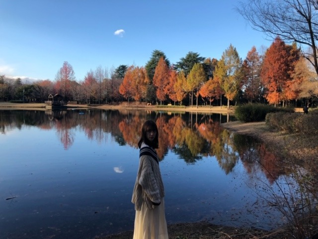
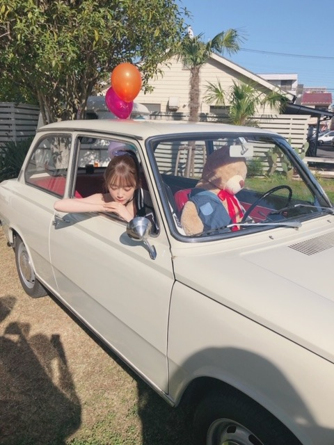

2019/1223Mon#アップトゥボーイ
アップトゥボーイ
表紙巻頭
今日発売です！


紅葉狩りしたいなぁと思っていたから
滑り込みの紅葉でテンションあがりました♪
水面に反射する紅葉がキレイ〜


ゆるっとしたトレーナーを着たり

アメリカンな服でかわいい車に乗ってみたり...
ちなみに、くまさんが運転手さん☺︎
是非、見てください！
日奈子が裏表紙、れなも載ってます。
感想待ってまーす♪
ポスター当たりますように❤︎
2019/12/23 12:48
コメント(241)
未央にゃブログ更新有難う
可愛い！チェックしてみるね(≧∇≦)
中学生のふくふくより
中学生のふくふくより
こんばんは❤
発売日おめでとうございます✨
表紙と巻頭ページを飾っていて、
まるでミニ写真集みたいですね♡
オフショットもとっても幻想的で、
みおちゃんと自然は相性良いです☆
最近の大人な感じはもちろん似合うし、
くまさんも似合ってしまうのが流石です✌
ポスターが当たるかどうかドキドキです～☺
発売日おめでとうございます✨
表紙と巻頭ページを飾っていて、
まるでミニ写真集みたいですね♡
オフショットもとっても幻想的で、
みおちゃんと自然は相性良いです☆
最近の大人な感じはもちろん似合うし、
くまさんも似合ってしまうのが流石です✌
ポスターが当たるかどうかドキドキです～☺
ぜったい買います！
未央奈ちゃん!アップトゥボーイ買いに行きます。それにしても写真かわいいね!
みおな、こんばんは。更新ありがとう！近況報告ありがとうございます。 アップトゥボーイ購入したよ。表紙、グラビア素敵でした。 では、毎日みおなに良いこと沢山ありますように！ おやすみおな！！
大阪全握行きましたよ！
楽しかった！！

楽しかった！！
ブログ更新ありがとう
ブログ見てアップトゥボーイ急いで買って来た！
未央奈のページ多くて大満足でした
ブログ見てアップトゥボーイ急いで買って来た！
未央奈のページ多くて大満足でした
未央奈さん、こんばんは
アップトゥボーイ買いましたよ～
美し過ぎる透明感に圧倒されました
紅葉に間に合って良かったですね
天気が良くて空と紅葉
そして未央奈さん
とっても綺麗です！
レトロなアメリカンスタイルに
ポニーテール姿が溶け込んでいて
素敵でしたよ(^_^)
明日はイブですね～
なにプレゼントしようかなぁ
ブログ更新して頂けたら
嬉しいですf(^_^)
アップトゥボーイ買いましたよ～
美し過ぎる透明感に圧倒されました
紅葉に間に合って良かったですね
天気が良くて空と紅葉
そして未央奈さん
とっても綺麗です！
レトロなアメリカンスタイルに
ポニーテール姿が溶け込んでいて
素敵でしたよ(^_^)
明日はイブですね～
なにプレゼントしようかなぁ
ブログ更新して頂けたら
嬉しいですf(^_^)
更新ありがとう
紅葉と未央奈ちゃんいい写真ですね。
ニット暖かそうですね。
ゆるトレーナーもかわいい～
くまさんとどこに行くのかな？
年末忙しそうですね。
体調に気をつけて頑張ってね。
大好きです
紅葉と未央奈ちゃんいい写真ですね。
ニット暖かそうですね。
ゆるトレーナーもかわいい～
くまさんとどこに行くのかな？
年末忙しそうですね。
体調に気をつけて頑張ってね。
大好きです
ブログ更新ありがとう！
紅葉が水面に反射して本当にきれいですね。
実際に見た方がきれいでしょうね。
アップトゥーボーイ見ます。
ブログ更新待ってます！
紅葉が水面に反射して本当にきれいですね。
実際に見た方がきれいでしょうね。
アップトゥーボーイ見ます。
ブログ更新待ってます！
かわいい!!
白くて細くて尊敬してます！
紅葉も堀未央奈もくまもかわいい
紅葉も堀未央奈もくまもかわいい
未央奈ちゃん、こんばんは！
大阪の全国握手会で久しぶりに会えて嬉しかった(*´ω｀*)
写真集買うね！って伝えられて良かった～。
車に乗ってる未央奈ちゃんの表情良いね～。
山口は発売が遅れるけど、チェックしておくね。
大阪の全国握手会で久しぶりに会えて嬉しかった(*´ω｀*)
写真集買うね！って伝えられて良かった～。
車に乗ってる未央奈ちゃんの表情良いね～。
山口は発売が遅れるけど、チェックしておくね。
逆さ紅葉もいいですよね。
え？運転手･･･大丈夫かな～(笑)
2期さんですね～
今日、みつけられなかったけど～
また本屋とか寄ってみる～
え？運転手･･･大丈夫かな～(笑)
2期さんですね～
今日、みつけられなかったけど～
また本屋とか寄ってみる～
こんばんは。セブンだよ(ฅ'ω'ฅ)♪
今日も1日お疲れさまでした
1枚目の口おさえてる写真めっちゃ好きです
ニット女子って可愛いよね〜♡
紅葉の写真も綺麗だね(o^^o)
ゆるっとしたトレーナーも良き！
大きめの服着た女の子ってなんでそんなに可愛いの？
みおちゃんだから可愛いの？
あっ！みおちゃんが可愛いのか！！
納得納得！
すぅきぃ♡
ではでは、明日も1日楽しんで生きましょうd(@^∇ﾟ)/ﾌｧｲﾄｯ♪
おやすみおな☪️
今日も1日お疲れさまでした
1枚目の口おさえてる写真めっちゃ好きです
ニット女子って可愛いよね〜♡
紅葉の写真も綺麗だね(o^^o)
ゆるっとしたトレーナーも良き！
大きめの服着た女の子ってなんでそんなに可愛いの？
みおちゃんだから可愛いの？
あっ！みおちゃんが可愛いのか！！
納得納得！
すぅきぃ♡
ではでは、明日も1日楽しんで生きましょうd(@^∇ﾟ)/ﾌｧｲﾄｯ♪
おやすみおな☪️
好き。
湖面に紅葉が映えて最高に美しいです！
東山魁夷の絵みたいです。
CD TVのフロントも可愛くて素敵でした。まいやんとのシンメも良かったです！
真夏さんがまいやんを評して「皆を照らす人」と言ってましたが、まいやんの後に「皆を照らす人」になれるのは、未央奈さんしか居ないと思います。
皆んなに寄り添って前に進んで行く、そんな力と経験と華やかさを持っているのは、まいやんの他には未央奈さんかなぁって思います。
2期生のみならず、1期生から4期生まで、期を超えて全てのメンバーと大いに絡み、乃木坂46全体を引っ張る未央奈さんをちょっと見てみたい気がします。
体に気をつけて、頑張ってください。
応援してます！
東山魁夷の絵みたいです。
CD TVのフロントも可愛くて素敵でした。まいやんとのシンメも良かったです！
真夏さんがまいやんを評して「皆を照らす人」と言ってましたが、まいやんの後に「皆を照らす人」になれるのは、未央奈さんしか居ないと思います。
皆んなに寄り添って前に進んで行く、そんな力と経験と華やかさを持っているのは、まいやんの他には未央奈さんかなぁって思います。
2期生のみならず、1期生から4期生まで、期を超えて全てのメンバーと大いに絡み、乃木坂46全体を引っ張る未央奈さんをちょっと見てみたい気がします。
体に気をつけて、頑張ってください。
応援してます！
こんばんは～
予約してたアップトゥボーイは明日到着のためまだ見れてないけど、楽しみです✨
見たら感想コメします
滅茶苦茶寒くなって来たので体調崩さず頑張ってね✨
今日のcountdownも予約してます
明日視れるかな✨
予約してたアップトゥボーイは明日到着のためまだ見れてないけど、楽しみです✨
見たら感想コメします
滅茶苦茶寒くなって来たので体調崩さず頑張ってね✨
今日のcountdownも予約してます
明日視れるかな✨
いい写真だなー。
ドレスアップも映えるけど、スウェットとかニットとかのラフな感じも未央奈っぽくて素敵です！！
ドレスアップも映えるけど、スウェットとかニットとかのラフな感じも未央奈っぽくて素敵です！！
更新ありがとう
アップトゥボーイ買います
車に乗ってる写真いいです
CDTV見ました
未央奈さんは今日も素敵でしたよ
アップトゥボーイ買います
車に乗ってる写真いいです
CDTV見ました
未央奈さんは今日も素敵でしたよ
みおな
今日もお疲れ様です
アップトゥーボーイは、まだ本屋に行ってないので、行ったら手にしますね
紅葉は、田舎の得意分野なので、写真みたいな場所はたくさんありますよ
しかも長野は、どの方向にも高い山があるから、毎日少しずつ色付いていく様子が、家からもよく分かります（赤くなってきたなーとか、雪で白くなったなーとか）
昨日は雪降って、アナ雪みたいになったけど、是非お越し下さい
それから俺は、今日のクリスマスCD TVの録画を忘れるという大失態をやってしまいました
クリスマスだから、明日か明後日だと勝手に思ってたら今日で仕事から帰ってきたら終わっててショック
とりあえず、YouTubeに乃木坂の歌ってるとこがアップされてたので、それを観ました
sing out！と帰り道を歌ってて、見逃したのが辛かったです
だけど、黒髪ポニーテールのみおなは可愛かった
sing out！は、本屋とか喫茶店とか美容院とかで流れるとつい口ずさみたくなる曲だから、好きです
次は気をつけるね
ありがとうございました
今日もお疲れ様です
アップトゥーボーイは、まだ本屋に行ってないので、行ったら手にしますね
紅葉は、田舎の得意分野なので、写真みたいな場所はたくさんありますよ
しかも長野は、どの方向にも高い山があるから、毎日少しずつ色付いていく様子が、家からもよく分かります（赤くなってきたなーとか、雪で白くなったなーとか）
昨日は雪降って、アナ雪みたいになったけど、是非お越し下さい
それから俺は、今日のクリスマスCD TVの録画を忘れるという大失態をやってしまいました
クリスマスだから、明日か明後日だと勝手に思ってたら今日で仕事から帰ってきたら終わっててショック
とりあえず、YouTubeに乃木坂の歌ってるとこがアップされてたので、それを観ました
sing out！と帰り道を歌ってて、見逃したのが辛かったです
だけど、黒髪ポニーテールのみおなは可愛かった
sing out！は、本屋とか喫茶店とか美容院とかで流れるとつい口ずさみたくなる曲だから、好きです
次は気をつけるね
ありがとうございました
未央奈お疲れ様！
ブログ更新ありがとう！
アップトゥボーイ絶対買うね！
どれも衣装似合っててめっちゃかわいい！
紅葉狩り出来て良かったね！
最近寒くなってきたから、
風邪とかインフルエンザとか気をつけてね！
これからも応援してる！
がんばれー！
ブログ更新ありがとう！
アップトゥボーイ絶対買うね！
どれも衣装似合っててめっちゃかわいい！
紅葉狩り出来て良かったね！
最近寒くなってきたから、
風邪とかインフルエンザとか気をつけてね！
これからも応援してる！
がんばれー！
いつもブログ更新ありがとう！
年末で忙しいのに本当にありがとう！
紅葉に間に合って良かったね！
夏の未央奈ちゃんもすごい似合うけど、
紅葉に囲まれた未央奈ちゃんもすごい良い！
アメ車に乗っている服装もかわいいし、
髪型もアメリカンな感じでかわいい！
大自然と未央奈ちゃんの組み合わせは
本当にほっこりして癒されます。
今年も残すところあと僅か！
ラストスパート頑張ってくださいね！
大変忙しいと思いますが、お身体には十分にお気をつけてくださいね！
年末で忙しいのに本当にありがとう！
紅葉に間に合って良かったね！
夏の未央奈ちゃんもすごい似合うけど、
紅葉に囲まれた未央奈ちゃんもすごい良い！
アメ車に乗っている服装もかわいいし、
髪型もアメリカンな感じでかわいい！
大自然と未央奈ちゃんの組み合わせは
本当にほっこりして癒されます。
今年も残すところあと僅か！
ラストスパート頑張ってくださいね！
大変忙しいと思いますが、お身体には十分にお気をつけてくださいね！
こんばんわん
１日お疲れ様！！
ブログ更新ありがとう！
了解ですチェックします
今の時期に紅葉ってまだあるんだって思ったけど、撮影って何ヵ月か前にやるものだよね普通笑
1枚目のお洋服可愛い
ではまた(*´∇｀*)
１日お疲れ様！！
ブログ更新ありがとう！
了解ですチェックします
今の時期に紅葉ってまだあるんだって思ったけど、撮影って何ヵ月か前にやるものだよね普通笑
1枚目のお洋服可愛い
ではまた(*´∇｀*)
未央奈大好きだよ！チェックするよ。
こんばんは！
アップトゥボーイ見たよ～
可愛かったぁ～
やっぱ二期生っていいよね
こうやって二期生が特集されたり、活躍を見れたりするのがすごく嬉しいんだ。
そして、ポスターなんですが……堀さん、あなたでしたよ。
まさか、未央奈の祈りが届いた！？！？
シンプルに可愛い
今度時間があるときにじ～～っくり読ませてもらいます。
では✋
てんちょ
アップトゥボーイ見たよ～
可愛かったぁ～
やっぱ二期生っていいよね
こうやって二期生が特集されたり、活躍を見れたりするのがすごく嬉しいんだ。
そして、ポスターなんですが……堀さん、あなたでしたよ。
まさか、未央奈の祈りが届いた！？！？
シンプルに可愛い
今度時間があるときにじ～～っくり読ませてもらいます。
では✋
てんちょ
『ちなみに、くまさんが運転手さん』
それじゃあ私は、後部座席で２人の仲を見守ろうっと♡
それじゃあ私は、後部座席で２人の仲を見守ろうっと♡
堀さん、こんばんは。
CDTV見ました。「帰り道は遠回りしたくなる」が何だか以前聞いたときより明るい印象でした。
アップトゥボーイ見ました。表紙の意志のある眼差しが良いですね。
トレーナーでソファに寝そべってる写真が袖も膝の角度も可愛いし、うなじ見せてる写真の瞳の輝きが綺麗だし、手足の肌の美しさに見惚れるし、名探偵みたいな格好でどアップなのが顔整ってるし、紅葉の中での理想のデートみたいな写真達も可愛くて溜息が止まりません。紅葉の中の写真の2分割された内の下の柔らかい雰囲気の写真が、表紙の勝気な印象の雰囲気と対照的でギャップ合って好きです。
ブログの写真にも有る紅葉の景色がとても綺麗ですね。カレンダーにしたいです。あとクマの運転する車に空いた窓からロック開けて勝手に乗り込んでくる流れが面白かったです。それもアメリカンなのでしょうか。
インタビューでは締めの言葉が力強くて頼もしかったです。人より周囲の反応が気になる特性がメンバーへの鋭い観察眼へと繋がってるのなら、堀さんはその特性を強みに変えたってことですね。堀さんは綺麗で可愛いだけじゃないんですね。
CDTV見ました。「帰り道は遠回りしたくなる」が何だか以前聞いたときより明るい印象でした。
アップトゥボーイ見ました。表紙の意志のある眼差しが良いですね。
トレーナーでソファに寝そべってる写真が袖も膝の角度も可愛いし、うなじ見せてる写真の瞳の輝きが綺麗だし、手足の肌の美しさに見惚れるし、名探偵みたいな格好でどアップなのが顔整ってるし、紅葉の中での理想のデートみたいな写真達も可愛くて溜息が止まりません。紅葉の中の写真の2分割された内の下の柔らかい雰囲気の写真が、表紙の勝気な印象の雰囲気と対照的でギャップ合って好きです。
ブログの写真にも有る紅葉の景色がとても綺麗ですね。カレンダーにしたいです。あとクマの運転する車に空いた窓からロック開けて勝手に乗り込んでくる流れが面白かったです。それもアメリカンなのでしょうか。
インタビューでは締めの言葉が力強くて頼もしかったです。人より周囲の反応が気になる特性がメンバーへの鋭い観察眼へと繋がってるのなら、堀さんはその特性を強みに変えたってことですね。堀さんは綺麗で可愛いだけじゃないんですね。
堀さん、おはようございます。
『アップトゥボーイ』さんのオフショット、ありがとうございます。紅葉も鮮やかな晩秋の空気感がいい感じ。紅葉が映る水面がまるで鏡のよう。行く秋を惜しむ、そんな雰囲気がとていもすてきです。
運転手のくまさんよ、助手席に乃木坂46の宝物を乗せているのだから、ぜひ安全運転でお願いしますよ。それじゃドライブに向けて出発！
ではまたコメントします。今夜はクリスマス・イヴですね。
さらばだ、また会おう！（気球に乗って去りぬ〜）
『アップトゥボーイ』さんのオフショット、ありがとうございます。紅葉も鮮やかな晩秋の空気感がいい感じ。紅葉が映る水面がまるで鏡のよう。行く秋を惜しむ、そんな雰囲気がとていもすてきです。
運転手のくまさんよ、助手席に乃木坂46の宝物を乗せているのだから、ぜひ安全運転でお願いしますよ。それじゃドライブに向けて出発！
ではまたコメントします。今夜はクリスマス・イヴですね。
さらばだ、また会おう！（気球に乗って去りぬ〜）
未央奈ちゃんメリークリスマスイヴ ＣＤTVクリスマス歌謡祭見たよ。やっぱり未央奈ちゃん可愛くて、かっこいいパフォーマンスで凄く癒されて、最高のクリスマスプレゼントもらえたよ。いつもありがとうね。 大好きやおー
みおなーーーー
未央奈～ こんにちは
ブログ更新ありがとうございます。
「アップトゥボーイ」、毎月買ってる雑誌ですから、今回も当然買いましたが、うれしいですね、未央奈が表紙巻頭なんて‥‥。水面に写る紅葉、いいところに目をつけていますね。
CDTV、もちろん見ましたよ。二期生たくさん活躍で、なんかうれしかったです。久しぶりの「帰り道は遠回りしたくなる」もいいですね。(実は私、昨日の帰り道、遠まわりしたら、シカ三頭に出会いました。)
そういえば、最近未央奈が「今、話したい誰かがいる」っていい曲だって言ってましたが、それ聞いて、またまた未央奈のこと好きになりました。自分が参加していない曲だから、複雑な思いなのかなと思っていたら、「いいものはいい」というその姿勢に、さすがと感心しました。
考えてみたら、これもデビュー以来、貫いている姿勢かな？ブログ・７５５の更新同様、未央奈の一貫している態度に、私たちもエールを送りたいと思います。
ということで、これからもよろしくお願いします。
ブログ更新ありがとうございます。
「アップトゥボーイ」、毎月買ってる雑誌ですから、今回も当然買いましたが、うれしいですね、未央奈が表紙巻頭なんて‥‥。水面に写る紅葉、いいところに目をつけていますね。
CDTV、もちろん見ましたよ。二期生たくさん活躍で、なんかうれしかったです。久しぶりの「帰り道は遠回りしたくなる」もいいですね。(実は私、昨日の帰り道、遠まわりしたら、シカ三頭に出会いました。)
そういえば、最近未央奈が「今、話したい誰かがいる」っていい曲だって言ってましたが、それ聞いて、またまた未央奈のこと好きになりました。自分が参加していない曲だから、複雑な思いなのかなと思っていたら、「いいものはいい」というその姿勢に、さすがと感心しました。
考えてみたら、これもデビュー以来、貫いている姿勢かな？ブログ・７５５の更新同様、未央奈の一貫している態度に、私たちもエールを送りたいと思います。
ということで、これからもよろしくお願いします。
CDTV観ました。シングアウトと帰り道遠回りしたくなるの歌とダンスとても良かったです｡ これからも応援してます。☺️
未央奈ちゃん更新ありがとー！
オフショットたくさんありがとう！
本屋さんに行かなくては！
ε=(ﾉﾟДﾟ)ﾉ
オフショットたくさんありがとう！
本屋さんに行かなくては！
ε=(ﾉﾟДﾟ)ﾉ
アップトゥーボーイ、買ってきましたよー
感想は755でお伝えしつつ、ここでも書き置きしますね。
25ページ分、どの未央奈も可愛かったし、笑顔を見て心が和らいだというか。安心感があってすごく良かったです。
個人的にはベージュのニット姿の未央奈が好きで、萌え袖とかやっちゃうのも良きでした。それにしても銀杏が綺麗でしたね。秋らしさが伝わってくる風景の中に、自然体でいる未央奈がいて。彼女感さえあるカットもあって可愛かった。。。
インタビュー記事の部分も読みました。
自分の目標としていたことで1つ叶ったことがあって、これからも女優として活躍できるように頑張っていく。そして、3期生、4期生とも交流を深めて、先輩として経験してきたことを伝えて、次の世代に受け継いでもらう。
誰かのことを考えて、気持ちを汲み取って、励ましの言葉をかけてあげたり、アドバイスをしたり。未央奈にしかできないことはまだまだたくさんあって、乃木坂46の一員として必要な存在だと思います。
先輩としての威厳とか、頼られる先輩になるとか。
理想の先輩像ってあると思います。でも、理想と現実は違うから、無理することはないよなって…。
なんかこう上手く伝えられないけど、頼り甲斐があることが先輩としての役割じゃないと思うんです。
僕が昔観たドラマの人物でこんな人がいました。
お調子もので、口から出まかせばっか言ってる人で、側から見ればただのふざけてる人で何も実績を残してきたわけでもない人。
ある人物が疑問に思うんです
「あなた、これまで何をしてきたんですか？」
この言葉にその人物は動揺して、突然姿を消してしまうんです。
その翌日から、周囲の人も静かになって。
「なんであいついないの？困るなぁ…」
「あいつがいないと、こう士気が上がらないっていうかさ」
「別に仕事で結果残してるわけじゃないんだけど、いてくれると安心するっていうか。あいつに励まされると『できる！』って不思議と思えるんだよね」
と、みんなが口々に言ったんです。
そのシーンを見てたら不思議と泣いちゃってました。
今の時代、結果が全て。みたいな風潮があって。
未央奈や他のメンバーもそうだと思います。
「ファンの方々や、そうでない世間一般の方に自分という存在をアピールして、活躍している姿を見せなきゃいけない」っていうことに追われていると思います。
でも、それだけが全てじゃないんです。
みんなの見えないところで、誰かの支えになる。
それも結果なんです。
人は誰かに支えられていきている。
これは疑いようのない事実で、その支えがあるから頑張ろうって思える。未央奈がいてくれるから「頑張ろう」って思える。有り余った気持ちは誰かに分け与えればいいし、それはきっと恩として返ってくる日がくる。
未央奈にはセンターに立ってもらいたい
女優としての夢を叶えていってほしい
自分の持っている目標を叶えてほしい
いろいろ求めてしまうことがあります。
だけど、後輩たちの活躍を後押しできるようにしたいっていう思いは、本当に素敵だと思います。インタビューを読んでも思ったし、この前の握手会で話した時もそう思いました。
これからも未央奈らしく。
自分が思ったとおりに過ごしていってほしいです。
僕はそのマイペースについていきます。
お節介だけど、これからも応援していきます。
・・・なんか話しが脱線しましたが、
今後ともよろしくお願いします。
体調管理には気をつけて。
年末の忙しさを乗り切るにも、ご飯いっぱい食べて、休むことも大切です。。
ではでは、ねこでした。
今日は、クリスマスイブ だよね！！ (^_^)
※アラ還の僕にとっては、季節感の一つにすぎないですが……(^_^;)
CDTVスペシャル！クリスマス音楽祭2019 録画しました。
※乃木坂コーナーは 既観←既読をもじった僕の造語(^_^;) 。
体調管理して お元気で！！ ばいばい (@^^)/~~~
━━━━━━━━━━━━━━━━━━━━━━━━
ps1：年賀状 昨日 投函 (^^♪
一年越しの返事を書いた 年賀状 (^。^)y-.。o○
ps2：忘年会スルー、年賀状スルー と スルーな今日この頃ですが、
年賀状は 書き続けます！！ (^_^)v
ps3：元旦の朝が 楽しみなんです！！ (^_^)
メールとは 違った趣（おもむき）が……♪♪♪
※アラ還の僕にとっては、季節感の一つにすぎないですが……(^_^;)
CDTVスペシャル！クリスマス音楽祭2019 録画しました。
※乃木坂コーナーは 既観←既読をもじった僕の造語(^_^;) 。
体調管理して お元気で！！ ばいばい (@^^)/~~~
━━━━━━━━━━━━━━━━━━━━━━━━
ps1：年賀状 昨日 投函 (^^♪
一年越しの返事を書いた 年賀状 (^。^)y-.。o○
ps2：忘年会スルー、年賀状スルー と スルーな今日この頃ですが、
年賀状は 書き続けます！！ (^_^)v
ps3：元旦の朝が 楽しみなんです！！ (^_^)
メールとは 違った趣（おもむき）が……♪♪♪
みおな、ひなこ、れなち…２期では最強の推しです。
そしてメリークリスマスであります。
そしてメリークリスマスであります。
いやーほんとかわいすぎる
ポスター楽しみ！！！
ポスター楽しみ！！！
寒いですね
「アップトゥボーイ」さん発売されたんですね
未央奈ちゃんの「凄いなあ
そして、乃木坂46のメンバーの方々やスタッフさん達もお幸せだろうなと心から思います
紅葉も確かに綺麗ですけど、未央奈ちゃんの方がお綺麗ですよ
日奈子ちゃんとれなちゃんもいらっしゃるんですね
メンバーの方々も、お２人もスタッフさん達も未央奈ちゃんと出会えて本当にお幸せだと思います
熊さんとのツーショットのお写真もとっても可愛いです
みおなちゃん、こんにちは。
CDTVクリスマス音楽祭、僕は見たよ。録画しながら見ました。
みおなちゃん、めっちゃ綺麗で、めっちゃかわいかったよ。
Sing Out！と帰り道は遠回りしたくなるのパフォーマンス、どちらもめっちゃよかったよ。
みおなちゃん、体調に気をつけて仕事頑張ってね。
またコメントするね。
CDTVクリスマス音楽祭、僕は見たよ。録画しながら見ました。
みおなちゃん、めっちゃ綺麗で、めっちゃかわいかったよ。
Sing Out！と帰り道は遠回りしたくなるのパフォーマンス、どちらもめっちゃよかったよ。
みおなちゃん、体調に気をつけて仕事頑張ってね。
またコメントするね。
腹へったな未央奈、、何食う？？
お疲れ様です。
ブログ更新ありがとうございます！
しかし安定の可愛いさですね！
何の服着てもお似合いです！
クリスマスプレゼントでポスター欲しいですね〜。
ブログ更新ありがとうございます！
しかし安定の可愛いさですね！
何の服着てもお似合いです！
クリスマスプレゼントでポスター欲しいですね〜。
未央奈ちゃんこんばんは‼ありがとうございます‼頑張ります‼頑張って下さい！ありがとうございます‼頑張ります‼頑張って下さい。ありがとうございます！
こんばんはお疲れさま☺
本屋さんでアップトゥボーイ買いました✨
特典付録のポスターは、れなちゃんでした✨
堀ちゃん。
レトロなヴィンテージな雰囲気や服も似合ってるね。
着こなしが上手やね☺
流石です。
一番好きなとこ。
茶色のキャップと服着てるアップの顔が好き✨
あと、池？湖？
たたずんでるところ✨
やはり個人的に何気ない表情や姿や自然な笑顔が好きです☺
写真集楽しみやね☺
ではではまたね✨
体調には気をつけてくださいね✨
ほなね、堀ちゃん☺
本屋さんでアップトゥボーイ買いました✨
特典付録のポスターは、れなちゃんでした✨
堀ちゃん。
レトロなヴィンテージな雰囲気や服も似合ってるね。
着こなしが上手やね☺
流石です。
一番好きなとこ。
茶色のキャップと服着てるアップの顔が好き✨
あと、池？湖？
たたずんでるところ✨
やはり個人的に何気ない表情や姿や自然な笑顔が好きです☺
写真集楽しみやね☺
ではではまたね✨
体調には気をつけてくださいね✨
ほなね、堀ちゃん☺
追伸✨
ハッピーメリークリスマス✨
ほなね、堀ちゃん☺
ハッピーメリークリスマス✨
ほなね、堀ちゃん☺
かわいい❤︎
癒される
癒される
今日はクリスマスイブですね。
明日はクリスマスですね。
楽しんで下さい。
では、おやすみなさい
明日はクリスマスですね。
楽しんで下さい。
では、おやすみなさい
こんにちは‼︎
そして、今日はクリスマスイブですね♪
メリークリスマス‼︎
そうそう、昨日のCDTVクリスマスライブ、観ましたよ♪
ポニーテールの未央奈、めっちゃ可愛かった…‼︎
また、今回は2期生が大勢出演してましたね‼︎
ニューカレドニアで、堀北コンビで語り合っていた夜のことを思い出して、なんかうるっときちゃいました♪
遠藤さくらちゃんも、4期生たった1人という状況のなか、センターで頑張ってましたね…‼︎
本人はきっと緊張したと思うけど…
同期がいない心細さとか、いきなりセンターに抜擢されるプレッシャーとかは、未央奈しか分からないところもあると思うので、良き理解者として支えてあげてください♪
さて、今回のブログ。
写真は、アップトゥボーイのオフショットなんですね‼︎
水面に映る紅葉、とっても綺麗ですね〜
そして、雲ひとつない青空と、それを映し出す湖面。
晩秋の空気が伝わってくるようで、いい感じです♪
そして何より、中央に佇む美人さん‼︎(笑)
う〜ん、絵になりますね♪
アメリカンな車もいい感じ。
くまさんの運転が少し心配だけど(笑)。
肉球が邪魔で、ハンドル握れないんじゃないかなあ？
ええと、『乃木坂世界旅』に関するコメントが、終わってないんですよね。
2日目の午後と、3日目。
いやいや、絶対に完結しないといけないってものでもないんだけど(笑)。
ここまで来たら、最後まで行きたいなあと。
今日は長くなってしまったので、また今度にしますね♪
ではでは、また。
明日も未央奈にとっていい1日になりますように♪
そして、今日はクリスマスイブですね♪
メリークリスマス‼︎
そうそう、昨日のCDTVクリスマスライブ、観ましたよ♪
ポニーテールの未央奈、めっちゃ可愛かった…‼︎
また、今回は2期生が大勢出演してましたね‼︎
ニューカレドニアで、堀北コンビで語り合っていた夜のことを思い出して、なんかうるっときちゃいました♪
遠藤さくらちゃんも、4期生たった1人という状況のなか、センターで頑張ってましたね…‼︎
本人はきっと緊張したと思うけど…
同期がいない心細さとか、いきなりセンターに抜擢されるプレッシャーとかは、未央奈しか分からないところもあると思うので、良き理解者として支えてあげてください♪
さて、今回のブログ。
写真は、アップトゥボーイのオフショットなんですね‼︎
水面に映る紅葉、とっても綺麗ですね〜
そして、雲ひとつない青空と、それを映し出す湖面。
晩秋の空気が伝わってくるようで、いい感じです♪
そして何より、中央に佇む美人さん‼︎(笑)
う〜ん、絵になりますね♪
アメリカンな車もいい感じ。
くまさんの運転が少し心配だけど(笑)。
肉球が邪魔で、ハンドル握れないんじゃないかなあ？
ええと、『乃木坂世界旅』に関するコメントが、終わってないんですよね。
2日目の午後と、3日目。
いやいや、絶対に完結しないといけないってものでもないんだけど(笑)。
ここまで来たら、最後まで行きたいなあと。
今日は長くなってしまったので、また今度にしますね♪
ではでは、また。
明日も未央奈にとっていい1日になりますように♪


ファンとして嬉しいです！！
忙しいとか関係なくＳＮＳも全力。堀ちゃんの好きな所の１つです！
来年もよろしくです！！